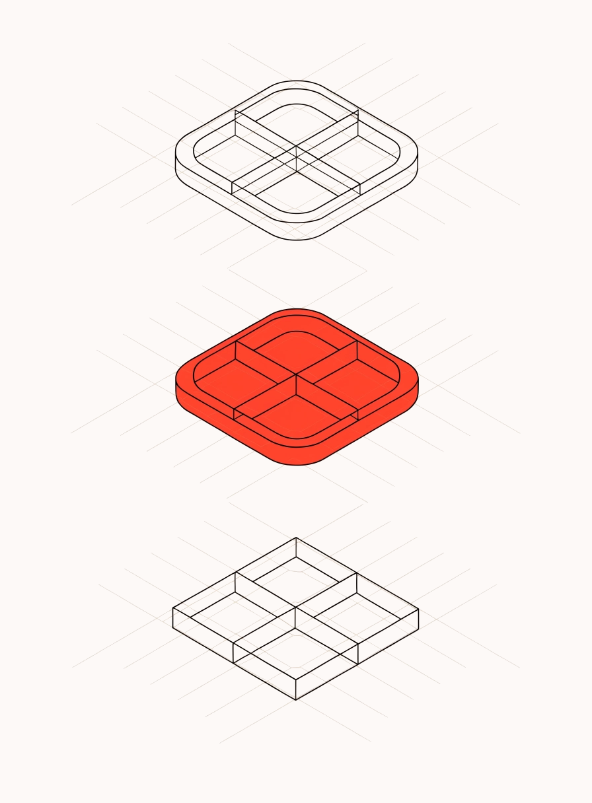

Второй блок выбран — переход в продукты, но оформление со стрелками на тёмном не подошло. Ниже четыре версии одной и той же ссылочной группы, все в ширине колонки 316 и в высоте, которая вместе с подпиской держится в 500. Последняя — та, что была, для сравнения.
Номер и название строкой, тонкие линии между — тот же приём, что у списка продуктов на главной. Блок читается как часть сайта, а не как врезка. Высота 185.
В Elementor: контейнер + три ссылки, Border Top у каждой
Три коротких ссылки в обводке — те же чипы, что были фильтром на кейсах. Занимают меньше места и не выглядят списком «меню». Высота 197.
В Elementor: контейнер + три Button в режиме Link
Иллюстрация продукта сверху и одна ссылка вместо перечня: блок ведёт в раздел, а не заставляет выбирать прямо в колонке. Кадр берём тот же, что стоит на странице продуктов. Высота 297: вместе с подпиской это 584 — в 500 не влезает, так что либо этот блок без подписки, либо подписку придётся ужимать.

В Elementor: контейнер-ссылка + Image + Heading + Button
То, что было: тёмная плашка, стрелка у каждой строки. Контрастно, но в колонке рядом со светлой формой выглядит чужеродно, а стрелки повторяют стрелку «назад» в шапке статьи.
Показана для сравнения